Traffic Signals
Traffic signals help provide for the orderly movement of traffic. Drivers must obey these signals, except when a law enforcement officer is directing traffic. You must obey a law enforcement officer at all times when they are directing traffic even if he/she is telling you to do something which is ordinarily considered against the law.
Steady Red Light (Stop)
Stop before entering the crosswalk or intersection. You may turn right unless prohibited by law. You may also turn left if both streets are one way, unless prohibited by law. You must yield to all pedestrians and other traffic lawfully using the intersection.
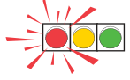
A Flashing Red Light
Stop completely before entering the crosswalk or intersection, then proceed when you can do so safely. Vehicles on the intersecting road may not have to stop.
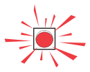
Steady Yellow Light (Caution)
A steady yellow light warns drivers to use caution and to alert them the light is about to change to red. You must STOP before entering the nearest crosswalk at the intersection if you can do so safely. If a stop cannot be made safely, then you may proceed cautiously through the intersection before the light changes to red.
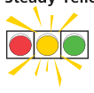
A Flashing Yellow Light
A flashing yellow light warns drivers to slow down and proceed with caution.
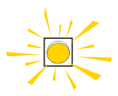
A Flashing Yellow Arrow For Left-Turns
A flashing yellow arrow allows a driver to turn left, but the driver must yield the right-of-way to oncoming traffic.
Steady Green Light (Go)
A steady green light means the driver can proceed on a green light if it is safe to do so. You may drive straight ahead or turn unless prohibited by another sign or signal. Watch for cars and pedestrians in the intersection. Be aware of reckless drivers who may race across the intersection to beat a red light.
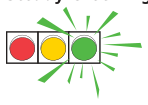
Green Arrow Displayed at the Same Time as a Red Light
A green arrow displayed at the same time as a red light means the driver can proceed carefully in the direction of the arrow after yielding the right-of-way to other vehicles and pedestrians.
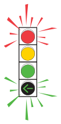
Left Turn on Green
You can turn left on a green light. However, you must yield the right-of-way to all traffic that is approaching from the opposite direction before turning.
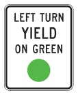
Traffic Signs
Traffic signs can help you to be a better driver because they:
- Warn of hazards ahead that are difficult to see
- Guide drivers to their destination by identifying the route
- Inform of local regulations and practices
- Regulate the speed and movement of traffic
The Standard Colors table shows colors commonly used on road signs and explains what each color means.
| Color | Description |
|---|---|
| Red: Stop, yield, or do what is posted on the sign | |
| Green: Indicated movements permitted, direction guidance | |
| Blue: Motorist services guidance | |
| Yellow: General warning or caution | |
| Black: Regulation | |
| White: Regulation | |
| Orange: Construction and maintenance warning | |
| Orange (Retroreflective): Used on various types of signs | |
| Brown: Public recreation and scenic guidance |
Knowing the shapes of these signs will help you know what to do when you are approaching from a distance.
| Shape | Description |
|---|---|
| Octagon: Exclusively for stop signs | |
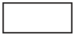 |
Horizontal Rectangle: Generally for guide signs |
| Equilateral Triangle: Exclusively for yield signs | |
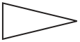 |
Pennant: Advance warning of no pass zones |
| Diamond: Exclusively to warn of existing or possible hazards on roads or adjacent areas. | |
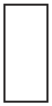 |
Vertical Rectangle: Generally for regulatory signs. |
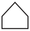 |
Pentagon: School advance and school crossing signs. |
| Round: Railroad advance warning signs. |
Warning Signs
Warning signs alert drivers to conditions that are immediately ahead and tell them what to look for. There may be road hazards, changes in direction, or some other situation you should know about. Not only must warning signs be observed for safety reasons but to disregard them may be a traffic violation.
When you encounter a warning sign:
- Pay attention
- Follow instructions
- Reduce speed to at least the posted speed signs
The following table provides examples of common warning signs.
| Sign | Description |
|---|---|
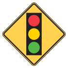 |
Warns of a traffic control signal ahead. |
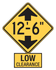 |
Height of underpass from road surface is shown. Do not try to enter if your load is higher than the figure shown on the sign. |
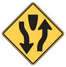 |
Advises you are approaching a section of highway where the opposing flows of traffic are separated by a median island. |
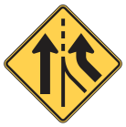 |
You are approaching a point where two roads come together and an additional lane begins. You are not required to merge. Watch for traffic in the new lane. |
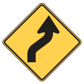 |
The road curves one way (right) and then the other way (left). Slow down, keep right, and do not pass. |
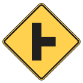 |
Another road enters the road you are traveling on from the direction shown. Watch for traffic from that direction. |
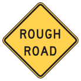 |
Slow down, the road surface ahead is in poor condition. |
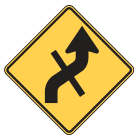 |
Cross traffic. |
| Sign | Description |
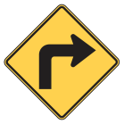 |
Road ahead makes a sharp turn in the direction of the arrow (right). Slow down, keep right, and do not pass. |
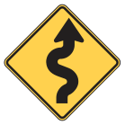 |
There is a winding road ahead. Drive slowly and carefully, and do not pass. |
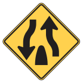 |
The divided highway you are traveling ends ahead. Be careful as you approach the point where two-way traffic begins again. |
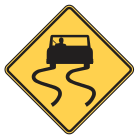 |
Slow down on wet road. Do not suddenly turn, speed up, or stop. |
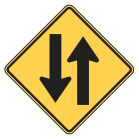 |
You should drive in the right-hand lane and expect oncoming traffic in the left hand lane. |
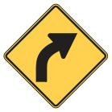 |
Road ahead makes a gradual curve in the direction of the arrow (right). Slow down, keep right, and do not pass. |
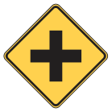 |
Cross road ahead; slow down and watch for cross traffic. Look carefully in all directions for traffic. |
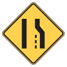 |
Gives advance notice of a reduction in the number of lanes of pavement ahead. |
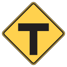 |
T-Intersection. |
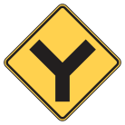 |
Y-Intersection or side road traffic to the right. |
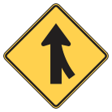 |
You are approaching a point where other traffic lanes come together with the one you are in. Watch for traffic from that direction. |
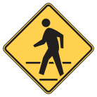 |
You are near an area where a large number of pedestrians cross the street. Slow down and watch for pedestrians. |
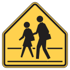 |
You are near a school. Slow down, watch for children, and prepare to stop suddenly if necessary. |
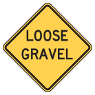 |
The surface of the road is covered with loose gravel. Go slow enough to keep complete control of your vehicle. Do not apply brakes suddenly or make sharp turns. |
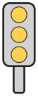 |
Mounted in front of an obstruction which is close to the edge of the road, such as culverts, or center piers on divided highways. |
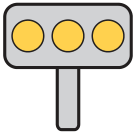 |
Mounted immediately in front of an obstruction or at short changes in road alignment. |
| Sign | Description |
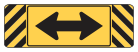 |
You are approaching a “T” intersection and must turn left or right. Be prepared to yield the right-of-way at the intersection if necessary. |
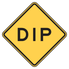 |
There is a low place in the road. Slow down in order to avoid losing control of your vehicle or an uncomfortable jolt. |
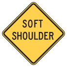 |
Use extreme caution to avoid running off the paved portion of the highway, because the dirt on the side of the pavement is soft and may cause you to lose control of the car. |
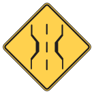 |
The bridge ahead is not as wide as the road. Slow down and use caution. |
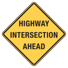 |
The road you are traveling on intersects a highway ahead. Slow down, look to the right and to the left for other traffic, and be prepared to stop. |
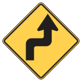 |
The road ahead makes a sharp turn to the right and then a sharp turn to the left. Slow down, keep right, and do not pass. |
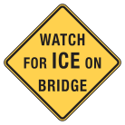 |
Warns of hazardous condition on bridge caused by ice. This sign will be displayed continuously during winter time periods. Drivers should slow down, avoid applying brakes suddenly, or making sharp or sudden movements. |
| Used to indicate the alignment of the road as an aid to night driving. | |
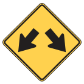 |
Indicates traffic is permitted to pass on either side of a traffic island or an obstruction. |
| Used to mark the ends of the side rails of narrow bridges and other obstructions. | |
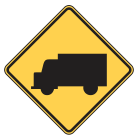 |
Slow your speed and watch for trucks entering or crossing the road or highway. |
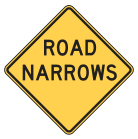 |
The pavement narrows ahead. Slow down and proceed with caution. |
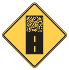 |
The hard-surfaced pavement changes to an earth road or low-type surface. Slow down. |
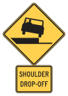 |
There is a significant drop from the pavement edge to the shoulder. If you must leave the pavement, slow down and steer firmly. |
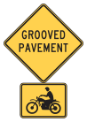 |
The pavement has been grooved to lessen the possibility of slippery pavement in wet weather. Motorcyclists should use caution. |
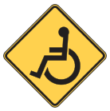 |
Slow down and watch for individuals who may be disabled or who may be crossing the road in a wheelchair. |
| Sign | Description |
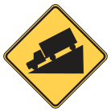 |
You are approaching a downgrade; all drivers approach with caution. It may be necessary to use a lower gear to slow your vehicle. |
| The sign will have yellow lights flashing (top and bottom) when the freeway ramp ahead is metered. The ramp meter (red or green) directs motorists when to enter the freeway. | |
| There is a sudden high place in the road ahead. Slow down in order to avoid losing control of your vehicle or an uncomfortable jolt. | |
| The road ahead curves sharply. Slow down, keep right, and do not pass. | |
| The lane ends ahead. If you are driving in the right lane, you should merge into the left. | |
| Be prepared for a stop sign ahead. | |
| Slow down and stay alert. Be prepared to stop if animals appear. |
Regulatory and Warning Signs
Regulatory traffic signs instruct drivers what they should, or should not do, in certain circumstances. Drivers must obey all regulatory signs in the same manner as traffic laws. These signs help protect the safety of all road users. The following table provides examples of common regulatory and warning signs.
| Sign | Description |
|---|---|
| If you wish to turn at an intersection where this sign is posted, do so only in the direction indicated by the arrow. | |
| High Occupancy Vehicle (HOV) Preferential Lane: Buses and vehicles used for carpools may use this lane only between the hours of 6 a.m. to 9 a.m., Monday through Friday. | |
| Do Not Cross Yellow Lines: The distance you can see ahead is so limited that passing another vehicle is hazardous and you may not pass. | |
| This sign indicates two lanes of traffic are permitted to turn left. The traffic in the left lane must turn left, traffic in the other lane has a choice. | |
| Do not park, stop, or allow your vehicle to stand idling in a parking space reserved for disabled individuals unless your vehicle has a disabled license plate or windshield identification card. | |
| Turning left at an intersection where this sign is posted is prohibited. | |
| Making a U-turn at an intersection where this sign is posted is prohibited. | |
| If you see this sign facing you, you are driving the wrong way on a one-way street and you are directly opposing the flow of traffic. | |
| Sign | Description |
| Stop: A red stop sign with white letters or a yellow sign with black letters. The stop sign means come to a complete stop, yield to pedestrians or other vehicles, and then proceed carefully. Stop before the crosswalk, intersection, or stop sign. This applies to each vehicle that comes to the sign. Slowing down is not adequate. | |
| Advisory Speed Sign: This sign gives the highest speed which you can safely travel around the curve ahead. | |
| Do not pass other vehicles. | |
| Stay in the right-hand lane if you are driving slower than other vehicles on the road. | |
| Indicates the speed at which the exit ramp from a highway may be traveled safely. | |
| This sign tells you the maximum speed (in mph) you are permitted to travel. Sign also indicates the maximum speeds permitted on the road for day time and nighttime. | |
| Trucks are prohibited from using or entering the roadway where this sign is displayed. | |
| Drive to the right of this sign. This sign is used in advance of islands and medians. | |
| The road or street ahead is for one-way traffic traveling in the opposite direction. You must not drive in that direction or else you will be driving into oncoming traffic. | |
| This signs tells you the road you are on joins with another road ahead. You should slow down or stop if necessary so you can yield the right-of-way to vehicles, pedestrians, or bicycles on the other road. | |
| School Zone: The speed shown is in effect when the yellow light is flashing. Be extremely careful for school children. | |
| Red light photo enforced. | |
| Drivers should not change lanes or turn across the double white lines. | |
| Vehicles facing the signal with the green arrow may proceed safely into the intersection. While turning left, you are protected from oncoming traffic that must stop for vehicles at an intersection. Vehicles turning at a protected light should use caution. | |
| This designates the shoulder of the road should only be used by vehicles required to stop because of mechanical breakdown, tire trouble, lack of fuel, or other emergencies. | |
| The road ahead is not open to any traffic. Look for a detour or other route. | |
| Instructs drivers that all traffic on the same roadway must merge into one lane. | |
| Sign | Description |
| This sign marks a place where you may cross over to the other side of the divided highway. | |
| The use of a wireless communication device is prohibited in the school zone. | |
| These signs are added to a stop sign advising that all approaching traffic to this intersection must stop before proceeding in the order you arrived. If two vehicles arrive at the same time, yield to the vehicle on your right. | |
| On roadways with more than one lane with vehicles traveling in the same direction, slower traffic should travel in a lane other than the farthest left lane. The farthest left lane is for passing only. | |
| The center lane is only used for vehicles turning left, and should never be used for passing or moving through traffic. The only time a vehicle should enter the center lane is at a point where the vehicle will have time to slow down or stop to make a safe left turn. | |
| A green signal will indicate when you may turn left. | |
| Vehicles driving in the right lane must turn right at the next intersection unless the sign indicates a different turning point. | |
| Advisory Speed Sign: This sign gives the highest speed at which you can safely travel around the turn ahead. |
Guide Signs
Guide signs are especially helpful when you are not familiar with an area. Guide signs tell you what road you are on and help you arrive at your destination safely. The table below provides examples of common guide signs.
| Sign | Description |
|---|---|
| The only place where you may lawfully throw your trash on the highway is in a litter barrel. This sign advises that such a barrel is one mile ahead. Litter barrels are also found at all rest/picnic areas. | |
| Texas Route Marker signs tell you what road you are or will be traveling on. Plan your trip and know which road you want to take. | |
| Interstate Route Marker signs tell you what road you are on. Plan your trip and know which roads you want to take. | |
| These signs are usually mounted above the road. The arrows indicate the lane or lanes to be used to follow a particular highway route. | |
| Mileposts provide a means of identifying the location of crashes, breakdowns, or other emergencies. Mileposts are erected every mile on interstate highways. | |
| Sign | Description |
| The lane that has this sign above it exits ahead. | |
| This sign tells you what road you are on. It is a short state highway in a city or urban area. | |
| Indicates an officially designated highway that branches off the regularly numbered highway and goes through the business portion of the city. | |
| Travel information: This sign tells you which way to go and how far you must travel to get to cities, airports, and other destinations. | |
| Lane-use control signals are overhead signals indicating if motorists should drive in a specific lane. If a red X appears above a lane, a driver should not drive in that lane. A steady yellow X means a driver should prepare to safely vacate the lane over which the signal is located because a lane control change is being made. A steady downward green arrow means a driver is permitted to drive in the lane over which the arrow signal is located. Lane-use control signals can be used on streets or highways. |
Railroad Warning Signs
Railroad Crossing
This sign means you are within a few hundred feet of a railroad crossing. Slow down and be prepared to stop. If you see a train coming, STOP. Never try to beat a train.
Railroad Crossbuck
Railroad crossbuck signs are posted at every railroad, highway, road, or street grade crossing and show the location of the train tracks. If more than one track is to be crossed, the sign will show the number of tracks. Always slow down, look, listen, and be prepared to yield the right-of-way to an approaching train.
Emergency Notification System
Emergency Notification System signs are posted so the public may report unsafe situations and for railroads to respond to malfunctioning warning signals, vehicles stalled on the tracks or other emergency situations. Posted on each sign are an emergency contact number and U.S. Department of Transportation (USDOT) National Crossing Inventory Number. The inventory number identifies the exact location of the crossing.
Gate and Flashing Light
Stop when the lights begin to flash before the gate lowers across your side of the road. Remain stopped until the gates are raised and the lights stop flashing.
RAIL · CROSSING · ROAD
At railroad crossings stop within 15 feet to 50 feet of the nearest rail when:
- You are directed to do so by a flag person
- There are flashing red lights or warning bells sounding
- There is any warning device telling you a train is coming
Pavement Markings
Pavement markings help you just like signs and signals. They are used to warn and direct drivers and to regulate traffic.
Two-Lane Rural Road with Two-Way Traffic
Keep to the right of the yellow center line. You may cross a broken line when passing another vehicle or when the right half of the road is closed. Do not cross the line if it is not safe or it is a solid yellow line.
Three Lane One-Way Roads
When each lane on a one way road is marked with a broken white line, you may drive in any lane. When turning from a one-way road, make sure you move into the lane closest to the turn you are going to make well in advance of your turn.
Left Turn Lane Only
The only time a vehicle should enter the center lane is at a point where the vehicle will have time to slow down or stop in order to make a safe left turn maneuver.
Left Turn Lane Only
Special Note: The center lane should never be used for passing or as a through-traffic lane.
Multi-lane Highway (Four or More Lanes)
Do not cross the double yellow line to pass. Stay in your lane as much as possible. If you are driving slower, keep in the right-hand lane.
Solid and Broken Lines
A solid yellow line on your side of the road marks a “no-passing zone.” Broken or dashed lines permit you to pass or change lanes, if safe.
Crosswalks
White crosswalk lines are painted across a road to indicate pedestrian crossing areas. Pedestrians should use these areas when crossing the road. At intersections where stop lines are missing, you must stop before the crosswalk when required to stop by traffic signs, traffic signals, or pedestrians in the crosswalk.
White Stop Lines
White stop lines are painted across the pavement lanes at traffic signs or signals. Where these lines are present, you are required to stop behind the stop line.
Solid Lines
Solid white lines are used for pavement edge lines, shoulder markings, channelizing, transitions, and lane use control. Crossing a solid white line should be avoided if possible. The solid yellow line on the left edge of the road is a guide for drivers to indicate driving to the left of the yellow line is prohibited. This type of yellow line can be found on interstate highways.
Crossing is prohibited where there is a pavement marking of double solid white lines.
Barrels
Barrels that are engineered to act as an impact cushion reduce the seriousness of crashes. These barrels are usually installed in front of a solid obstacle and in areas of high crash frequency.
Hearing Impaired
If you see this flag on the back of a bicycle, slow down, as the bicycle operator may be hearing impaired. This sign may also be displayed on vehicles to alert others the driver may be hearing impaired.
Construction and Maintenance Devices
Various traffic control devices are used in construction and maintenance work zones to direct drivers, bicyclists, or pedestrians safely through the work zone and to provide for the safety of the workers.
Special Note: Traffic fines double for violations that occur in construction zones where workers are present.
The most commonly used traffic control devices are signs, barricades, vertical panels, drums, cones, tubes, flashing arrow panels, and flag individuals. Orange is the basic color for these devices.
When you are in a construction and maintenance work zone, be prepared:
- To slow down or stop as you approach workers and equipment
- To change lanes
- For unexpected movements of workers and equipment
Construction and Maintenance Signs
Construction and maintenance signs are used to alert drivers of unusual or potentially dangerous conditions in or near work zones. Most signs in work zones are diamond shaped, but a few are rectangular.
| Sign | Sign | Sign | Sign |
|---|---|---|---|
Channelizing Devices
Barricades, vertical panels, drums, cones, and tubes are the most commonly used devices to alert drivers of unusual or potentially dangerous conditions in highway and street work zones, and to guide drivers safely through the work zone. At night channelizing devices are often equipped with flashing or steady burn lights.
When you encounter any type of channelizing device:
- Slow down and prepare to change lanes when it is safe to do so.
- Be prepared for drivers who wait until the last second to move to the open lane.
- Maintain reduced speed until you clear the construction zone. There should be a sign indicating you are leaving the construction zone.
- Return to the normal driving lane only after checking traffic behind you.
Passing Traffic
The diagonal stripes on the barricade or vertical panel guide the driver towards the direction to where the traffic is to pass.
Pass to the Right
Stripes sloping downward to the right means the driver should bear to the right.
Pass to the Left
Stripes sloping downward to the left means the driver should bear to the left.
Flashing Arrow Panels
Large flashing or sequencing arrow panels may be used in work zones day and night to guide drivers into certain traffic lanes and to inform them part of the road ahead is closed.
Flag Person
A flag person is often provided in roadway work zones to stop, slow, or guide traffic safely through the area. A flag person wears an orange vest, shirt, or jacket and uses stop/slow paddles or red flags to direct traffic through work zones.
- A flag person is used in cases of extreme hazard.
- A flag person’s instructions must be obeyed.
- When instructed to stop, do so in your lane and do not veer right or left.
- Do not attempt to go forward until the flag person instructs you to do so.
- Proceed with caution, expect the unexpected.
- Always be on the lookout for oncoming vehicles in your lane of traffic.
STOP · SLOW
Automated Flagger Assistance Device (AFAD)
An automated flagger assistance device (AFAD) is used to control road users through temporary traffic zones. An AFAD is designed to be remotely operated, allowing a flag person to be positioned out of the lane of traffic. Temporary traffic control in roadway work zones can also include pilot/escort vehicles, advanced warning signs, or temporary traffic signals.
Obey Warning Signs and Barricades
It is a violation to disobey the instructions, signals, warnings, or markings of a warning sign, or to drive around a barricade.
The offense is a misdemeanor punishable by a fine of $1 to $200. Fines double in a construction or maintenance work zone when workers are present anywhere in the construction zone.
The offense is a Class B misdemeanor punishable by a fine of up to $2,000 and/or up to 180 days in jail when a warning sign or barricade has been placed at a location where water is over any portion of a road, street, or highway.
Slow-Moving Vehicle Emblem
This emblem is required for all slow-moving vehicles. Slow-moving vehicles are those designed to operate at a maximum speed of 25 mph or less, and the term includes all vehicles, farm and other machinery, and any other road machinery drawn by either animals or slow moving motor vehicles.
- The use of this emblem is prohibited on anything other than a slow-moving vehicle. It must not be used on other vehicles or on stationary objects.
- Exceptions. The following do not need the special emblem:
1) A vehicle being used in actual construction work while traveling within the limits of a construction zone marked as required by the Texas Transportation Commission;
2) An implement or machinery being towed by a slow-moving vehicle bearing an emblem, if this emblem remains visible.
REAR · RED TAIL LIGHT · HAZARD WARNING LIGHTS (FLASHERS) RED OR AMBER · RED REFLECTOR · SLOW MOVING VEHICLE EMBLEM
Image source: Some images in this chapter are courtesy of The MUTCD, 2009 Edition, published by FHWA at mutcd.fhwa.dot.gov/pdfs/2009/pdf_index.htm